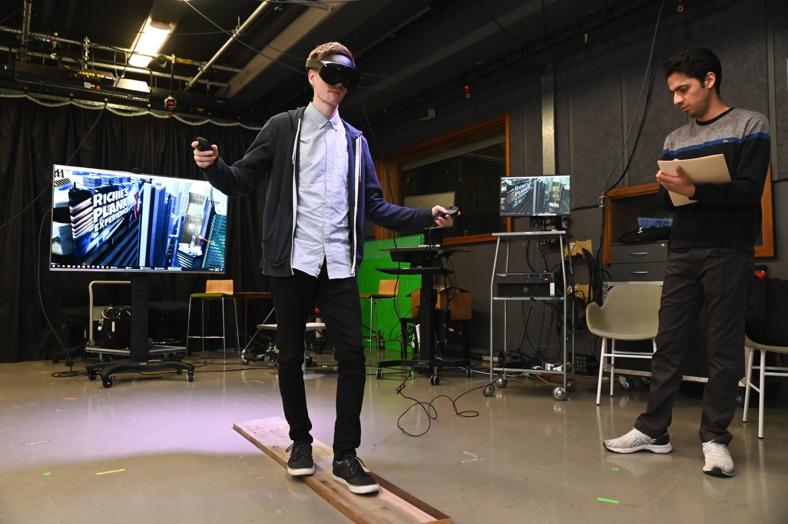

About Me
I'm Connor, a researcher and XR developer based at Adelaide University. I work at the intersection of psychology and technology, with a focus on participatory approaches to designing and building tools for underrepresented communities.
My work focuses on using emerging technologies to support underrepresented and disadvantaged communities. I believe the most effective way to do this is through participatory and co-design methods - processes that involve the people a tool is being built for from the start, ensuring the outcome reflects their needs rather than assumptions about them.
When I'm not working, I like to keep myself engaged and active, whether that's rock climbing at the local centre, mountain biking, or playing a high-intensity competitive video game on my PC.
Skills & Expertise
Research
- Participatory & Co-design
- Mixed Methods
- Emerging Technology Integration
- Working with Vulnerable Populations
Research Tools
- JASP
- Jamovi
- NVivo
- MATLAB
- Excel
- EEG & Wearable Sensors
- Virtual Reality
Development
- Unity Development
- C# Programming
- Python
- 3D Modelling
- Texturing
Get in Touch
I'm always interested in discussing research collaborations, VR development, or just connecting with others working in similar spaces.